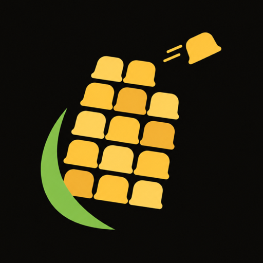

Corn vs Flush
Logo, colour and voice explorations. AI drafts for choosing a direction: whichever wins gets a clean vector redraw. Nothing in the app has changed.
corn
“Browse. Save what matters. Flush the rest.”
 Flush KernelA kernel with a drain swirl inside
Flush KernelA kernel with a drain swirl inside
 CornyWinking cob going “shh”
CornyWinking cob going “shh”

Tab CobKernels are tabs; one flies offCurrent palette: near-black, corn yellow, leaf green · Bricolage Grotesque
- “All gone. Fresh as a new cob. 🌽”
- “Flushed. Nobody saw nothing.”
- “Poof. Clean slate, same great corn.”
flush
“Browse whatever. Flush whenever.”
 A · VortexWater spiralling down the drain
A · VortexWater spiralling down the drain
 B · ButtonA push button with a whirlpool
B · ButtonA push button with a whirlpool
 C · WinkA winking water drop
C · WinkA winking water drop
Navy + electric blue · Fredoka · every text colour passes WCAG 4.5:1 (dark and light)
- “One tap. No trace.”
- “Swirl, swirl, gone. 🌀”
- “Done. Feel free to wash your hands of it.”
| Corn | Flush | |
|---|---|---|
| Says what it does | No, it's a joke you learn | Yes: the name is the main feature |
| Discreet on a home screen | A cute corn icon | A blue swirl that looks like any app |
| Searchable / trademark | Common word; not checked | Very common word, and “Flush button in Flush” clash; not checked |
| Cost to switch | None | App name, app ID, logos, copy, docs; cheap only before launch |
Outlined Flush icon = the brand agent's recommendation. Tap any logo for its full mockup: app icon on dark and light, home screen, 192/96/48 px, wordmark lockup and alternates.